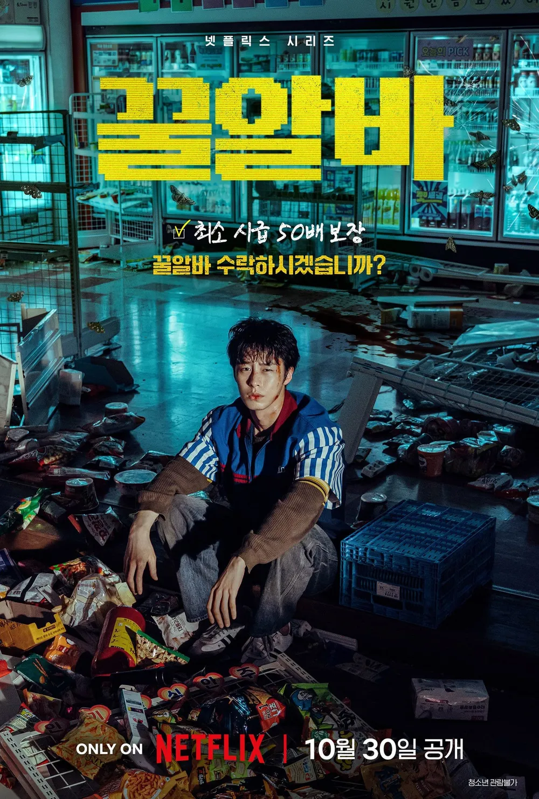

쇼츠에 하도 뜨길래 궁금해서 봄
선 세줄요약 하자면
진부한 주제의식
딱히 없어도 상관없을 스토리
흥미롭고 기괴한 크리처 그리고 약간의 고어
누렁이라면 맛있게 먹을 수 있는 크리처/스릴러물임
킬링타임급은 됨
흔히들 쓰레기만화라 불리는 잘팔리는 만화에 뿌빠이를 크리처로 바꾼 느낌
심심하면 한번 보던가
근데 쇼츠로 봐도 충분하긴 할듯

쇼츠에 하도 뜨길래 궁금해서 봄
선 세줄요약 하자면
진부한 주제의식
딱히 없어도 상관없을 스토리
흥미롭고 기괴한 크리처 그리고 약간의 고어
누렁이라면 맛있게 먹을 수 있는 크리처/스릴러물임
킬링타임급은 됨
흔히들 쓰레기만화라 불리는 잘팔리는 만화에 뿌빠이를 크리처로 바꾼 느낌
심심하면 한번 보던가
근데 쇼츠로 봐도 충분하긴 할듯
뭔가 애매하게 중립을 지키는 스토리가 나는 맘에 들었음
억지감동 의미넣는다고 억지로 비트는거 개노잼임 생각없이 딱 B급감성으로 보는 드라마 영화 너무좋음
좀 아까웠음. 비주얼이나 설정은 좋았다고 생각하는데… 아예 본격적인 괴담물로 갔으면 어땟을지… 세계관은 매력적이었음…
ㄹㅇ 처음에 재밌었는데 갑자기 노동자들의 권리가 끼어들면서 노잼되버림... 걍 후반 에피도 spc나 백룸 공포게임들 소재를 이용해서 만들었어도 괜찮았을텐데...
초반갬성 끝까지 갔으면 존나 명작나왔을거임
그냥저냥 괜찮았음 딱 평타수준
여동생 이쁘더라
내용은 모르겠고 오프닝 도트연출 감성 좋더라
한편이 길면 노잼인데 짧게 자극적으로 끝나서 재밌었음
근데 영화 내용을 이해 하겠다 싶으면 노잼임
시즌2를 염두해두고 끝낸것도 괴심함
이따구로 만들고?
무난한데 소재가 좋아서 먹을만함 ㄹㅇ
3화까지가 딱 재밌음
쇼츠로만 봐도 충분하게 딱됨 풀로 영상보는건 시간 낭비고 좀 본거 시간아깝네